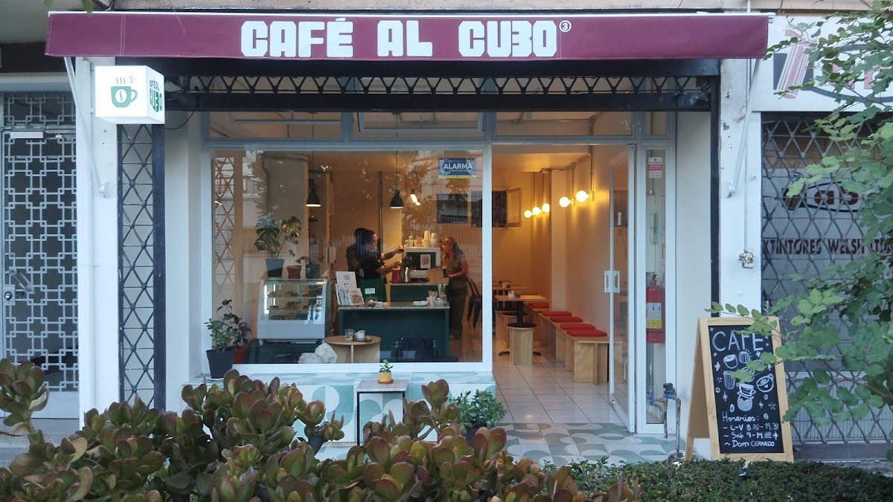
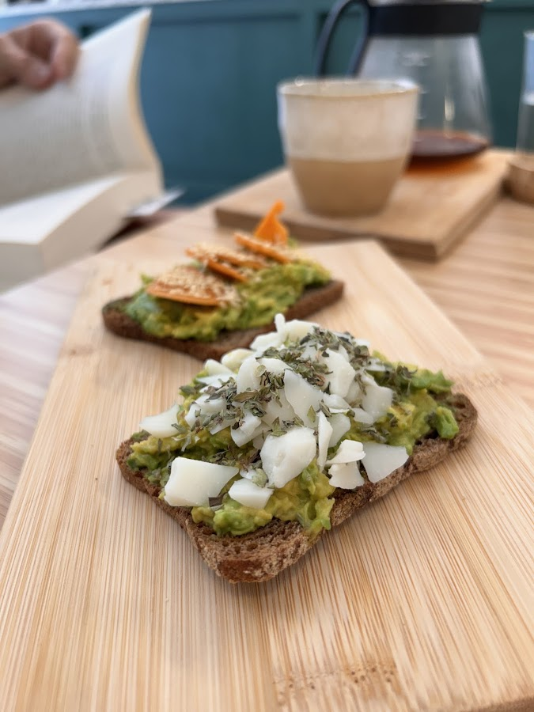
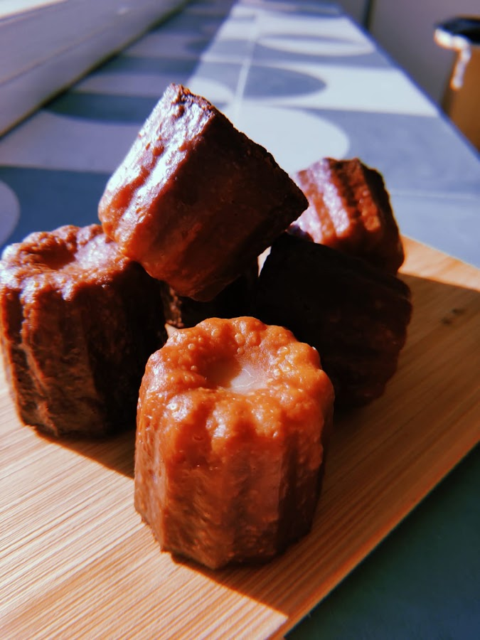
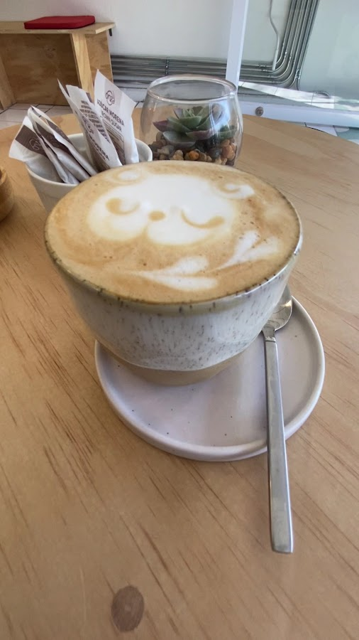
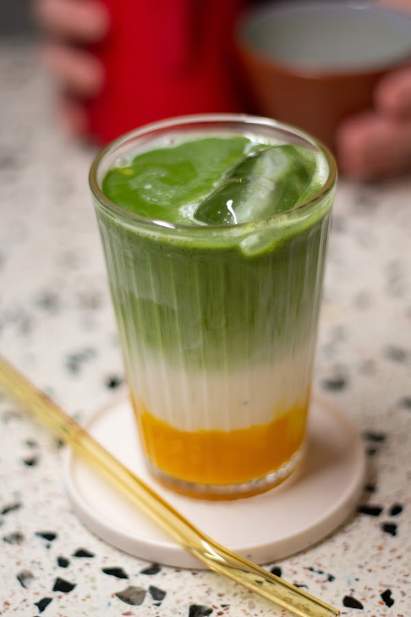
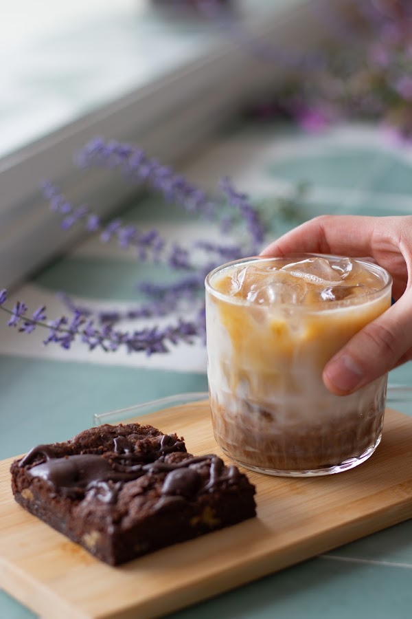
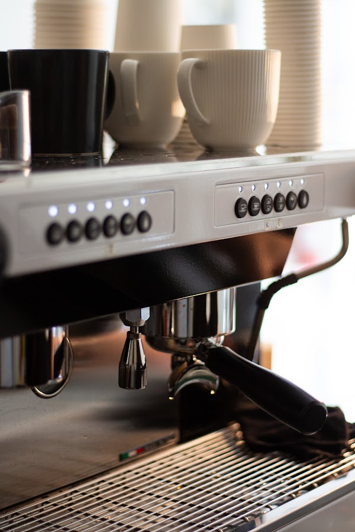

El café,
llevado al cubo.
Café de especialidad, pastelería propia y un espacio pensado para quedarse — a trabajar, a conversar o simplemente a disfrutar un buen café.

Pastelería propia
Canelés y galletas de pie de limón son los productos que más repiten sus propios clientes en Google — hechos en casa, sin apuro.
Un lugar para quedarse
Google lo destaca como un buen lugar para trabajar con el computador y para sentarse solo a tomar algo con calma — nada de apuro por la mesa.
Trato cercano
El dueño responde personalmente cada reseña en Google, agradeciendo por nombre — un detalle poco común que sus clientes valoran.
Café, cuidado al cubo
Café al Cubo nació en Providencia con una idea simple detrás de su nombre: elevar cada detalle — el café, la atención, la pastelería — al cubo. No se trata solo de servir un buen café, sino de que la experiencia completa valga la pena, desde la primera taza hasta la última miga del canelé.
Es un espacio pequeño y cuidado, con entrada y mesas accesibles para sillas de ruedas, donde tanto se puede llegar a trabajar tranquilo con el notebook como a sentarse solo a leer sin que nadie apure la mesa — algo que sus propios clientes destacan en Google como uno de sus puntos fuertes.
La pastelería es de casa: canelés, galletas de pie de limón y una carta de té e infusiones que sus clientas describen como "maravillosa". Todo pensado para que la próxima taza de café sea motivo suficiente para volver.

"Un grato lugar, cálido y acogedor, quienes atienden son muy amorosas y conversadoras... El mejor planchado de mi vida. Con una carta de té e infusiones maravillosa."
— Carola Pino, reseña real en Google Maps




Nuestra Carta
Los precios de la pastelería son los que están escritos a mano en la vitrina del local. El resto de los productos son reales — los que más mencionan sus clientes en Google e Instagram — pero su precio hay que consultarlo directo en el local.
Reseñas reales
"Me gusta mucho ir a este café. La comida y el café es muuuy rico. Recomiendo pedir el planchadito. Atienden muy bien y hay mucha buena onda. Si o si prueben las galletitas de pie de limón, no te vas a arrepentir."
"Un grato lugar, cálido y acogedor, quienes atienden son muy amorosas y conversadoras. El mejor planchado de mi vida, lo amé. Con una carta de té e infusiones maravillosa."
"La atención muy buena y el local muy bonito... el precio es bueno." — el dueño le respondió agradeciendo el comentario y el desafío a seguir mejorando.
¿Ya nos visitaste?
Escribe tu reseña en GoogleVisítanos
Dirección
Seminario 189, Providencia
Espacio con entrada y mesas accesibles para sillas de ruedas
Horario
- Lunes8:00 – 19:30
- Martes8:00 – 19:30
- Miércoles8:00 – 19:30
- Jueves8:00 – 19:30
- Viernes8:00 – 19:30
- Sábado9:00 – 14:00
- Domingo9:00 – 14:00
Contacto
No hay teléfono ni WhatsApp registrado por el negocio — el canal de contacto confirmado es Instagram.
@cafe.alcubo en Instagram